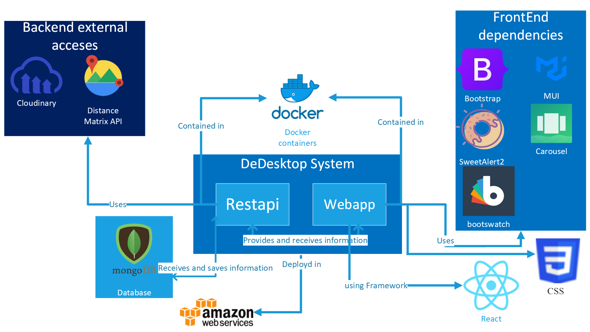

1. Introduction and Goals
DeDe (Descentralized Delivery) is an e-Commerce application (online retail system) in which users will be able to select and order products.
DeDesktop is the name of the application. It is an online technology store in which it is sold products such as personal computers, laptops, peripherals, etc.
It follows SOLID principles, guaranteeing the client’s privacy regarding the personal data of the client such as the address.
1.1. Requirements Overview
Requirements document:
-
The system will emulate an online shopping system where end-users can select and order products to buy.
-
Once a user selects the products to buy, the system will calculate the delivery costs by looking up the desired address of the end-users in their pods and calculating the costs according to the distance from the distribution center to that address.
-
The system will show the final costs of the products to buy and once the user decides to buy them, it will record the event simulating that the sale has been done and it can proceed with the delivery.
-
The system will allow the users to visualize the orders done.
-
The application should be accessible and deployed using a continuous integration system.
-
Allow a user to have more than one shipping address in their pods (e.g. Home, work, Gym, School etc.).
-
Add the possibility to include estimation of time people are at a location (e.g. Monday-Thursday work 09.00-18.00) and restrict some of the addresses to be used for delivery at some point in time.
-
Add pick-up locations that the delivery services can use. Based on the delivery address the pick-up location could be calculated (this can either be by one of the addresses in the profile or a pick-up location that’s on the route of the receiver (e.g. between home and work).
-
In order to calculate the delivery costs, external APIs from different carriers could be used and selected, so the users can compare and select the carrier.
-
The system can allow some users with administrative roles to visualize statistics about products ordered and monitor the state of orders.
-
Implement both a web application and a mobile application.
-
Implement an emulator of the delivery system which can notify the users when the products have arrived and keep track of the deliveries.
-
Support for different types of actors like customers, managers, administrators, etc. who can do different actions like inventory management, prices changes, items cataloging, etc.
-
Add the possibility that there are several distribution centers or warehouses where the products are stored.
-
Add the possibility that the users can add or update their address information to their pods directly from the app.
-
Add ratings and reviews to products or distribution centers so the users can provide feedback about their experience.
1.2. Quality Goals
| Priority | Quality Goal | Motivation |
|---|---|---|
1 |
Privacy |
The treatment of private information will be decentralized, ensuring customer privacy |
2 |
Usability |
All users must be able to use it, whether they have previous knowledge about the application or not |
3 |
Integrity |
Data must be consistent and complete at all times |
4 |
Efficiency |
Making a purchase should be easy for the user, reducing response and load times |
5 |
Testability |
Major components should be easily tested and fixed |
6 |
Modifiability |
The architecture must be easy to modify, adding new features or changing existing ones |
Detailed priority in epigraph 10.
1.3. Stakeholders
| Role/Name | Contact | Expectations |
|---|---|---|
Client |
They interact directly with the application. They select the products to purchase and view their order history. |
The aim is for the customer to be able to interact with the application intuitively and have a comfortable shopping experience. In addition, their privacy is respected in accordance with the SOLID principles. |
Administrator |
They are in charge of modifying prices, calculating inventories, seeing all orders placed or placing orders with suppliers. |
Administrators will be able to access their exclusive functions through a simple login. |
Development Team |
They are the creators of the application. They can modify, update and improve it. |
Develop a complete application that contain the requirements. Learn to work in a team efficiently and learn new technologies. |
Delivery business |
Dstribute the products to the client’s address |
Their objective is to get the list of the products to deliver and the address of the client who ordered. |
2. Architecture Constraints
2.1. Technical constraints
Constraint |
Explanation |
React |
We will use the React Framework for the UI (User Interface). This ir a requirement |
SOLID |
With SOLID, we’ll be able to let people be propietary of their own intformation using PODs. This way, they can allow or reject the application to access the data or not. This is a requirement |
Docker |
The application will be running in a Docker Host |
GitHub |
We will use GitHub to deploy the project and all the files related with it. This is a requirement |
TypeScrypt |
TypeScript is the techonology used for the backend. Based on JavaScript is quite similar. This is a requirement |
Node.js |
Based on JavaScript, is a backend technology wich allows us to execute our code |
2.2. Organizational and political constraints
Constraint |
Explanation |
Team and meetings |
This is a course application. Development team consist in 5 (five) people with a very limited experience in techonolgies used in the project. Is our first time working together, so some organizational decisions could be not as agile or accurate as they could. Also we don’t have the same class schedule so find a room for a meeting could be difficult sometimes |
Time |
The project has a very tight time to be finished. This means that our application will not be as developed as it could be |
Deadlines |
This application is part of course calification criteria. This means we have several deadlines and important releases in a target date. This means we can have trouble finishing the parts we need to release in some of that targets. |
2.3. Conventions
Constraint |
Explanation |
Aesthetic and ease of use |
The UI (User Interface) has to be aesthetic and easy to use. Both of them are very important criteria in our application, so all of our decisions need to have this in mind |
Documentation |
We will use Arc42 template to develop documentation |
Solid |
The application must follow Solid conventions |
TypeScript |
We will use TypeScript/JavaScript naming conventions |
Redux |
We will use Redux style guide (based on REACT) conventions |
MVC |
We will follow MVC conventions in naming and layer separation |
W3C AAA |
Our application will follow AAA conventions. This allow us to make the aplication more usable to everybody |
3. System Scope and Context
3.1. Business Context

| Entity | Input | Output |
|---|---|---|
User |
The user will interact with the application through a computer or other device. The user will see the frontend of the application and send requests to the backend |
The output is represented in many parts of the system, reaching almost every point in the system |
User Pod |
It creates new PODs for users who have not created them, can update the information contained in them, and also handles requests made to it by providing the requested information |
Submit the information requested by the application |
Hefesto System |
It is the system with which the user interacts, it receives the requests sent by the user through the interface |
It processes incoming requests and manages the database so that it is consistent with incoming requests. Once it has the requested information, it shows it to the user via the interface |
Database (MongoDB) |
Queries, information requests |
Storaged and consistent data responding to the system needs |
3.2. Technical Context
Our goal is to have an online sales system called DeDe (Decentralized Delivery), that respects customer privacy by following SOLID principles. SOLID principles tell us that each user’s personal information must be decentralised, and for this we use SOLID PODs. SOLID PODs are stores of information outside our system. In our system we only store the accesses to the PODs, in order to speed up the reading processes. Users have control over who has their information, thus increasing privacy.

| Technology | Explication |
|---|---|
MongoDB |
We will use it to store the location of the SOLID POD |
React |
It is a library to help us carry out the project |
TypeScript |
It is used for program |
Grafana and Prometeus |
This is used to monitor |
Postman |
It is used for testing |
Docker |
Possibility of DeDe to be deployed and launched |
Heroku |
Possibility of DeDe to be deployed and launched |
4. Solution Strategy
4.1. Technology decisions
The technologies we have decided to use for the development of the app are:
-
React: React is an open source library, which makes it easy for us to program user interfaces. React is responsible for rendering and updating the components of our interfaces in the best way.
-
Node.js: It was created to be used in JavaScript, specialising in the use of asynchronous events. Thanks to Node.js, the use of these events is much easier. This technology is more focused on the management and creation of scalable network applications.
-
SOLID: SOLID provides the user with the peace of mind of knowing that their data is safe and decentralized. As well as giving them the ability to provide their data to other entities very quickly and easily.
-
TypeScript: TypeScript is a superset of JavaScript, meaning that it contains all of the functionality of JavaScript and then some.
-
GitHub: It is a version management system.
-
MongoDB: MongoDB is open source software, which is a NoSQL document database, we use NoSQL as it gives us the ability to work with many different data without spending so much time modeling these elements.
-
Heroku: Heroku is a cloud server which we will use to deploy our App. Heroku makes it easy to deploy and scale Node.js applications. Run any recent version of Node.js. Deploy apps in seconds using dependency caching.
-
Docker: We will use it to launch the application in a container of the technologies we need to carry out the DeDe.
-
Express: Express is Node’s most popular web framework, providing basic mechanisms for Node.
-
Bootstrap: Bootstrap is a style library, which we will use for the frontend.
-
Prometheus: Prometheus is open source software, which gives us the ability to monitor our system through a wide range of available tools. This data is stored together with a time instance, with which we manage to have a fairly accurate record of the events that occur in our system.
-
Grafana: Grafana is an open source software which allows us to analyze, consult, visualize, alert and explore the metrics, records and monitoring of our system. With this data we can make interesting graphs and visualizations.
-
Postman: Postman is an open source software which offers us the necessary help to build, use and test APIs, making the steps easier.
4.2. Decisions about the top-level decomposition of the system
-
On the frontend we are going to use the Redux pattern. This pattern was created initially to be used in React, so it optimizes the loading of components since it only reloads the modified components, it will also help us in passing information between components by storing the state of each component in an easily accessible way.
-
In the backend part we are going to use the MVC pattern (model, view, controller) this pattern is one of the most used for this part of the application. The pattern will be used without the view part as this part would be the WebApp.
4.3. Decisions to achieve quality goals
To try to achieve all the proposed quality objectives, we will strive to obtain very good accessibility with a help system for people who need it. We will also focus on making an accessible and adaptable website following the AAA level. To improve the privacy of the users we will use SOLID POD, which decentralizes the personal information of each user. We will store only the location of this data, managing to improve security since we do not have sensitive data of the users.
4.4. Organizational decisions
We will try to hold weekly meetings via Teams, in addition to the meeting classes of the subject, for minor doubts and fluid communication we use WhatsApp. We also communicate via GitHub through the Issues, we determine the work of each member and update these tasks in a Kanban board with the already mentioned Issues.
5. Building Block View
5.1. Whitebox Overall System

We have two types of actors interacting with the application:
-
User: Is the owner of his POD. He interacts with the system through user view (this view will be explained in level 2).
-
Administrator: He interacts with the system via admin view (this view will be explained in level 2).
The application is represented as a whitebox. Inside of it we can see the three layers of MVC (Model View Controller) convention.
5.2. Black Box descriptions of Overall System
Name |
Responsability |
Model |
Store data and get data from data base. Defines business model. Gives information to View layer to represent it on the device |
View |
Receives data from Model layer to represent it on the device. Is the layer wich interacts with actors (users and administrator) |
Controller |
Receives inputs and manage the interactions between View layer and Model layer |
6. Runtime View
6.1. Register User
This runtime view shows the process of registering a user, going through WebApp and ApiRest to the user POD and storing the location in the database.
6.2. Login User
This runtime view shows the login process of a user, going through WebApp and ApiRest to the user POD, via the location stored in the database.
6.3. Visualize orders done
The user presses a button to visualize their previous orders, the WebApp send the petition to the RestApi. The RestApi asks for the client’s orders from the user pod. User pod returns the client’s orders to the RestApi, and the RestApi sends them to the WebApp. The WebApp show a list of client orders.
6.4. Delete a product from the shopping chart
The user chooses the product and presses the button to delete it. The WebApp send this petition to the RestApi. The RestApi send the petition to delete a product to the POD, and the POD to the DataBase. Once the product is deleted from the DataBase, success is returned to the client.
6.5. Add products to the shopping cart
The user, identified as a client, selects the cattegory of the product of its choice and the DeDe app returns the filtered products to them. Then, the user can scroll through de app looking for the returned products and press the button "Add to Cart" to add them into the shopping cart and pay for them whenever they want.
6.6. Paying process
The user presses the pay button on their shopping cart and the DeDe app takes them to the paying page where they can see the total price to pay in addition to the shipping price previously calculated by the DeDe application after asking the user’s pod for their address and calculating the distance from that address to the distribution center. After seeing the final price, the client must press the pay button so the DeDe app registers the order on the database and returns the confirmation
6.7. (Admin) Delete User
6.8. (Admin) View Item Statistics
6.9. (Admin) Monitor Order Status
7. Deployment View
7.1. Infrastructure Level 1
-
Motivation: This diagram helps us to point out the different components that we will have to use and their dependencies. It helps us to visualise the deployment path for the system to work.
-
Quality and/or Performance Features: To improve the quality of our system we have used the best technologies at our disposal, trying to minimise waiting times for user requests. It helps us to use MongoDB, as it is a very efficient DB.
-
Mapping of Building Blocks to Infrastructure:

7.2. Infrastructure Level 2
-
Motivation: This second diagram details the launching of the layers that we have to do ourselves, see WebApp and RestApi.
-
Quality and/or Performance Features: As we can see in the following image, we are going to use Heroku to deploy the application, serving as a remote server. We will also use Docker to launch each part of the system.
-
Mapping of Building Blocks to Infrastructure:

8. Domain model
| Name | Description | Client |
|---|---|---|
User who choose and buy products |
POD |
User’s information |
Order |
Keep a list of the products that the customer has ordered. |
Product |
Contains information about a product, such as name and price. |
ProductInOrder |
Product associated with an order, saves the quantity that the customer wants of the product. |

8.1. Persistence
At the beginning there was a debate about whether it was better to use SQL or NoSQL for persistence. After some discussion it was concluded that the best option for this problem is NoSQL. To be more specific MongoDB, which is a NoSQL document database. We will use a NoSQL database as opposed to a SQL database, because our model encompasses many products. These products have several attributes which are very different. For example, a power supply differs in many ways from a graphics card. Because there are so many items, we believe it is best to use a NoSQL DB.
8.2. User interface
DeDe user interface is desinged to give every user an intuitive and familiar experience related using the React framework combined with TypeScript as constraints. We follow the usual standards of e-commerce online sites to make the navigation closer to what most of the people already know. Also, the interface is meant to pass the AAA validation so we make sure it’s usable for almost everyone


8.3. Internazionalization
The application will potentially deal with various locations and people, so make a multi-language application looks like the best decision. This decision must be done since the begining of the desing (lately will cost a lot of resources).
This allows us to reach a bigger audience and make the application more accesible.
8.4. Security
Security is a key aspect of our software (and almost all) project. We will follow SOLID as recommendation to store our customers data and we will manage the data base to be always in a consistent state.
8.5. Additional libraries
TODO
8.6. Archiutecture and design patterns
TODO
8.7. Code Quality standards
Code quality standars allows us to make an understable, maintainable and reusable code for future revisions and changes. Code should always have a correct structure to be easily understandable.
To achieve this we will use all tools programs give us and make correct decisions like design patters, use convention naming and try to reduce technical debt.
8.8. Testability
Applications should be strongly tested. We will use user histories to make acceptance tests and unit test to test the rest of the application components and states during running process.
We think this is the best way to be sure the project works correctly.
9. Design Decisions
Decision |
Details |
Advantages |
Disadvantages |
Internazionalization |
We will develop the documentation in english and the application in english and spanish |
With this internazionalization we improve accesibility a lot |
Time can be a factor to consider and make two language internazionalization can use a lot of time |
Design architecture |
We will use MVC as architectural pattern for backend and Redux for frontend |
With MVC we have better usability and a very organized and understable code. Redux helps us with data synchrony |
MVC: We need to structure the code perfectly to comply with the convention. Redux: We never used it |
Frameworks |
We will choose Redux framework to develop application frontend |
We can use it to facilitate the implementation |
Is a new technology to us so we need to improve our knowledge about it |
Data Base |
We choosed MongoDB to store all the information |
MongoDB allows us to make an easier implementation |
Is a new technology to us so we need to improbe our kownledge about it |
10. Quality Requirements
10.1. Quality Tree

10.2. Quality Scenarios
Quality goal |
Scenario |
User Priority |
Developer Priority |
Privacy |
The app is SOLID based which means the users have their personal information storaged in pods (personal online data stores) this technology makes it better for the users always respecting their privacy. For example, the client’s address can be consulted on it’s pod in props of calculate the shipping price. |
High |
High |
Efficiency |
The system is able to act quickly and with fluidity when the user interacts with it. For example, if a client wants to buy a product, the shipping price should be rapidly calulated not making it tedious to the user. |
High |
High |
Testability |
DeDe can be tested with certain ease using technologies such as Prometeus, Grafana and Postman as an external help to make sure everything works properly and finding bugs or mistakes in props to improve the application. |
Low |
High |
Modifiability |
The system, divided in Frontend, Backend and documentation (which makes it easer to develop) has a quite reusable code, which increments the possibilities of adding new functions or update the existing ones with more looseness. For example, the code used for the implementation of the function that allows clients see theis orders, can also be used for the function that allows administrators see every single order made on DeDe. |
Low |
High |
Usability |
The site has an intuitive design that makes the experience comfortable for every user in the application with them being clients or administrators. They should know where to go or what to do with a glance due to the familiarity of the design. |
High |
High |
Integrity |
The data should be always in a valid state following the ACID values. If some process fails, there are not going to be any changes and the system will stay in a consistent state without harming the user. For example, if a purchase fails just before the order confirmation, the system will return to a consistent state where the purchase won’t be made. |
High |
High |
This quality requirements are priorized and more described in the epigraph 1
11. Risks and Technical Debts
11.1. Risks
This is the compilation of the identified risks ordered by priority that we must minimize or avoid.
-
Not having knowledge of the following technologies:
| Technology | Risk |
|---|---|
SOLID |
We may have difficulty following SOLID principles as we have not worked on a SOLID project before and handling decentralized data may be difficult. |
PODs |
We don’t have any knowledge about PODs prior to this project, so we need to learn how to keep user information secure and private, which can take considerable time. |
React |
We have never used it, so we must learn during the project. |
MongoDB |
We may run into difficulties using a NoSQL database, as we have experience only using SQL databases, which can cause delays while we learn how to use it. |
Grafana and Prometeus |
We have never used these tools to monitor a project and we need to adapt to them. |
Postman |
We have never used this testing tool. |
Node.js |
We don’t know how to use it. |
Heroku |
It costs time to adapt to it due to we have never used it. |
Docker |
We have to learn how to use it. |
Express |
We may have some dificulties, we need to learn about it. |
Bootstrap |
We have to learn about this style library. It will cost some time. |
TypeScript |
Some members of the group have some knowledge of JavaScript, and since TypeScript is similar to JavaScript, it won’t be too difficult to adapt, although it will take time to learn this language. |
Git |
We have little knowledge about using Git, so we can easily go wrong. |
-
Other risks:
| Risk | Explanation |
|---|---|
Abandonment of a member |
If a member leaves the group, it would mean redistributing the work, suddenly having more workload for the members who remain. |
Being just 4 members |
It can be more difficult to develop this application being only 4 due to other groups have 5 or even 6 members to do the same work. |
11.1.1. Minimize or avoid risks
| Risk | How to avoid or minimize |
|---|---|
Not knowing the technologies |
We seek information and practice using them. |
Posibility of a team member leaving |
We will have good communication and help each other. |
Being only 4 members |
We have to do a hard work to develop tha application. |
11.2. Technical debts
Unresolved directive in index.adoc - include::12_glossary.adoc[]
About arc42
arc42, the Template for documentation of software and system architecture.
By Dr. Gernot Starke, Dr. Peter Hruschka and contributors.
Template Revision: 7.0 EN (based on asciidoc), January 2017
© We acknowledge that this document uses material from the arc 42 architecture template, http://www.arc42.de. Created by Dr. Peter Hruschka & Dr. Gernot Starke.